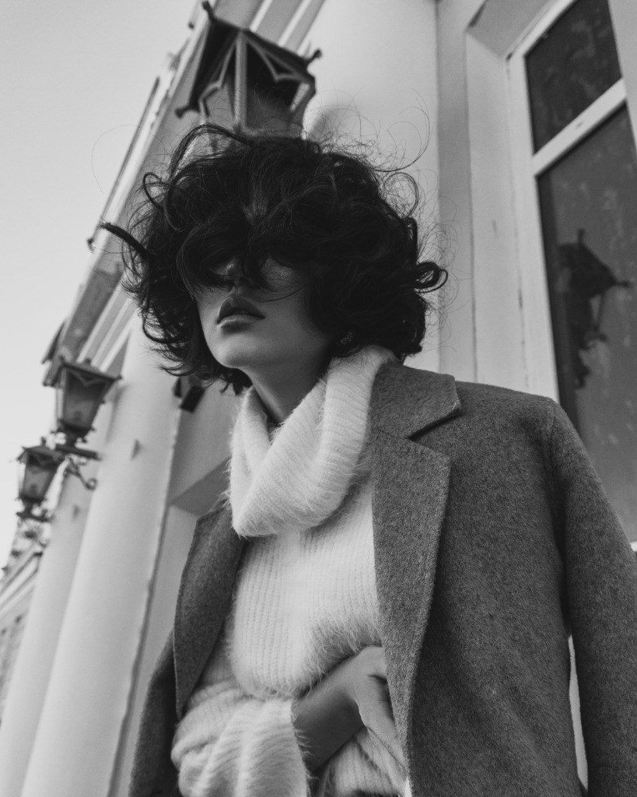
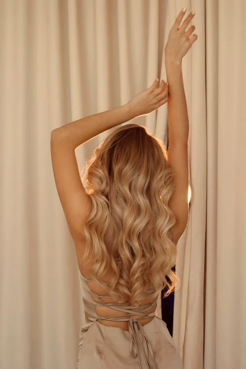
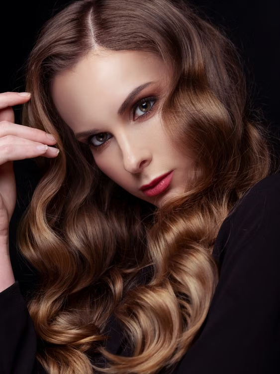
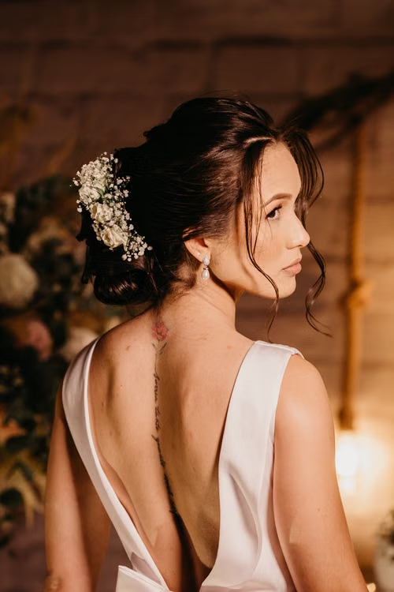

"Saç sağlığından ödün vermeden, yüz anatominize özel tasarlanan mikro kaynak ve renklendirme sanatı."




"Aşağı Hisar Mahallesi'nde, kendi yerimizde samimi ve profesyonel bir ortamda hizmet veriyoruz. Saçınızı yıpratmadan uzatmak, doğal tonlarda renklendirmek ve hak ettiğiniz özeni göstermek için buradayız."
"Yüz anatominize, saç yoğunluğunuza ve geçmiş boya geçmişinize özel planlama."
"Saç bağlarını koruyan özel açıcılar ve hissedilmeyen mikro kapsül teknolojisi."
"Aylarca formunu koruyan pürüzsüz saçlar ve evde bakım tavsiyeleri."
@yunus_soner_loca_hairdesing • Canlı stüdyo seanslarımızı, mikro kaynak montajlarını ve kristal sarı dönüşüm anlarını kaydırarak keşfedin.
"Hayır. Kullandığımız mikro kapsüller saç teline ağırlık yapmaz, hava almasını engellemez ve çıkarma işleminde saça zarar vermez."
"Her kadının saç boyu, yoğunluğu ve geçmiş işlem durumu farklıdır. Size en doğru ve dürüst fiyatı sunabilmek için analiz sonrası netleştiriyoruz."
"Bağ koruyucu özel solüsyonlar ve kademeli açma teknikleriyle saç tellerinizin elastikiyetini koruyoruz."
"Özellikle mikro kaynak ve ombre gibi kapsamlı işlemler için en az 2-3 gün öncesinden randevu oluşturmanızı öneriyoruz."